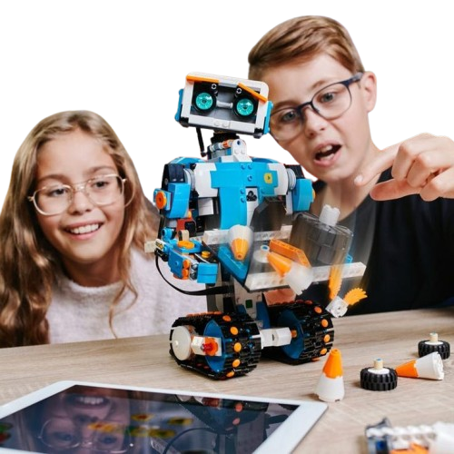

¡Ciencias Tecnología Ingenieria Arte y Matemáticas!
Metodología STEAM para la educación
Ver Cursos Ayuda con proyectos¿Qué aprenderas hoy?
En el corazón de la innovación educativa se encuentra Centro Robótica EDU, un espacio diseñado para inspirar, educar y preparar a los estudiantes en el fascinante mundo de la robótica y la tecnología. Este centro no solo enseña a los niños y jóvenes a construir robots, sino que también fomenta el pensamiento crítico, la creatividad y el trabajo en equipo. Además, ayudamos en la creación de proyectos y ofrecemos soluciones a problemas relacionados con Arduino, brindando soporte integral para quienes desean llevar sus ideas al siguiente nivel.
Impacto causado en nuestros estudiantes
Nosotros
Promover el aprendizaje activo y la resolución de problemas a través de la robótica educativa, brindando a los estudiantes las herramientas necesarias para desarrollar habilidades en ciencia, tecnología, ingeniería y matemáticas (STEM), mientras se fomenta la creatividad, el pensamiento crítico y el trabajo colaborativo, con el fin de preparar a las futuras generaciones para los retos tecnológicos del mañana
Metodología
|  |
Clases sincronicaUn docente trabajará en vivo durante todas las sesiones de manera presencial Clases asincronicaUn docente trabajará en vivo durante todas las sesiones de manera virtual utilizando la plataforma de zoom ProyectosTutorias con robotica educativa utilizando Arduino Ayuda con proyectos interdisciplinarios Ayuda con proyectos de grado MetodologíaERCA Aprendizaje experiencial orientado a competencias computacionales Metodología STEAM - STEM ABP-Aprendizaje Basado en Proyectos Código aplicado a la resolución de problemas |